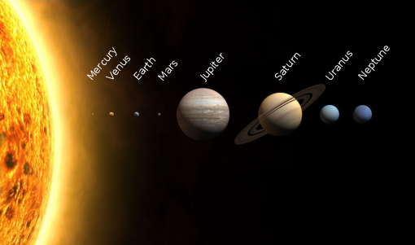

The aim of this page is to give a brief understanding of the solar system that we live in.
The Solar System is the gravitationally bound system of the Sun and the objects that orbit it, either directly or indirectly.
Of the objects that orbit the sun directly, the largest are the eight planets, with the remainder being smaller objects, the dwarf planets and small solar system bodies.
Of the objects that orbit the sun indirectly-the moons-two are larger than the smallest planet mercury.